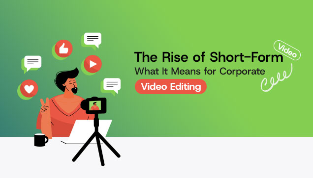

© Copyright 2022 © All Right Reserved.

The scroll never stops, and by 2025 and according to Beaconinside, it states that short-form videos will make up to 82% of global internet traffic. The short-form video market is projected to reach $2.22 billion in 2025, driven by demand for quick, engaging content across entertainment, education, and marketing. There are many types of platforms over which short-form videos are being shared, which are Instagram, YouTube, Facebook, and Youtube whereas now LinkedIn being a professional platform, has also introduced and started to have a feature of sharing short-form videos. But the real question is how corporate videography can utilize this trend to boost its marketing efforts?
Let’s check it out..!!
Short-form videos are under the duration of 60 seconds, often extending up to 3 minutes.
These videos have seen a major rise in popularity across all age groups and demographics.
It has been seen that users are now spending more time on platforms focused on short-form videos rather than on traditional media networks.
This trend was targeted for Gen Z, which has become mainstream for engaging millennials, Gen X, and the upcoming baby boomers generation as well.
Long-form corporate videos remain valuable, but must be changed to short, engaging, and mobile-friendly content to bring valuable results.
Note: At least 75% of people prefer video over text for learning about products or services.
Short-form videos are typically meant to be under a duration of 60 seconds, which are created to grab attention quickly. In a world where people’s attention spans are very difficult to grab (down to about 8 seconds, according to research by Microsoft), it is a task in itself. There are a few platforms that are taking the lead in the market of social media and corporate videography.
Here are some key features and numerics for some popular short-form video platforms and what makes them stand out:
| PLATFORM | ACTIVE USERS | KEY FEATURES |
|---|---|---|
| TikTok | Over 1 billion | Algorithm-driven content discovery, viral trends |
| Instagram Reels | Integrated with Instagram’s 2 billion users | Leverages existing Instagram features for seamless sharing |
| YouTube Shorts | Part of YouTube’s 2.5 billion users | Leverages YouTube’s search capabilities & vast library |
If this still hasn't convinced you, let’s talk about numbers. Why are brands shifting to short-form video content?
Short-form videos drive 2.5x more attention as compared to long-form videos. Instagram solely boosts an average user session for 95 minutes per day, making it one of the most engaging social media platforms.
Traditional methods of marketing used to involve high-cost marketing elements, but now, if we take a look, shooting a reel doesn't involve much cost; it just includes some good creativity and a smartphone.
Instagram does not give priority to follower count, but instead it focuses on follower count and pushes content based on how well people adapt and use the algorithm. This indicates that even small brands can take their business up and go viral in the world of marketing.
The content that you are making to grab the attention of your audience must be relatable to them so that their attention can be grabbed easily. It is important to make your content according to the ongoing trends and audience preferences.
The rise of short-form video has brought a major change to corporate video editing. Nowadays, editors need to adopt fast pacing and tighter cuts, ensuring every second counts. Dead air, slow transitions, and lengthy explanations are no longer in trend, which means they must be trimmed or eliminated to keep the viewer's attention in your hands to gain a viral effect over your content. As most of the short-form videos are consumed using smartphones and in vertical and square formats are becoming the new norm. Corporate video production requires editors to change and adapt the new patterns of editing and give a spooky and funky effect to the videos.
There are many users who watch videos without sound, and that is why the use of bold captions, graphics, and text overlays has become very essential. Editors must be prepared beforehand to create videos that grab the attention of viewers, even if they are watching a video without the audio. Additionally, to stay on top of the current trends and changing style of video editing, it is essential to stay relevant in the fast-moving digital landscape. Corporate videos must reflect current trends, memes, and other platform-specific styles and needs. Editors must be well aware of the ongoing trends so that they can recreate videos with similar feels and relatable visuals.
It is essential that one piece of content should go live on different platforms, which means a proper effort and concentration to be given to put a better marketing effort when it comes to corporate video editing marketing using new means of content creation in short-form content. This shift in demand and rise of short-form videos requires being flexible and easy to approach for the editor as well.
Here are Some Must-Have Skills for Modern video edits:
With the rise and changing demand of short-form video, the skillset needs an upgrade, too!
There are challenges as well as opportunities!
While you work on short-form video, it comes with different kinds of new challenges for you should be prepared for to stay up with the ongoing trends:
However, for companies that adapt to corporate video editing, the rewards are very significant. Short videos can give greater reach to a brand's voice and reputation, increased reach, and boost engagement. It helps to generate revenue directly, and they offer a way to test messaging and gather real-time feedback from the audience.
| Future Trends | Description |
|---|---|
| AI-Driven Recommendations | Videos will become increasingly personalized as AI tailors content to user preferences |
| E-Commerce Integration | Features like the reel shop will enable direct product sales through short videos. |
| Increased Brand Investment | More businesses will allocate budgets to short-form video ads as ROI continues to grow. |
Short-form video content is one of the most powerful tools in digital marketing today. Whether you’re a small business, startup, or enterprise brand, now is the time to embrace it.
So, what are you waiting for? Start with us TODAYAYAY!
At our organization, we assign personalized skilled editors who work according to needs and maintain a proper understanding to make a balance and understand business needs and requirements. This helps to ensure that every video aligns with the brand and delivers the best results over other competitors
We use hooks that grab the attention of the users, Stock footage, trending music, and dynamic elements to make your videos stand out. Our bigger goal is to provide better results with increased views and a high engagement rate over the videos
Our team focuses on delivering high-quality edits while maintaining brand reputation and consistency. They also ensure to deliver seamless content that reflects the vision of the brand.
We curate and not just edit the content. Our team works and delivers the best by providing content by doing research on what is considered to be the best in the market, by providing good edits, and high-quality content.
Whether it is a small project or a large one, we are here to handle it all. Whether it is a reel, movie, product promo, corporate shoot, or sales content, we help you scale your business to new heights.
© Copyright 2022 © All Right Reserved.